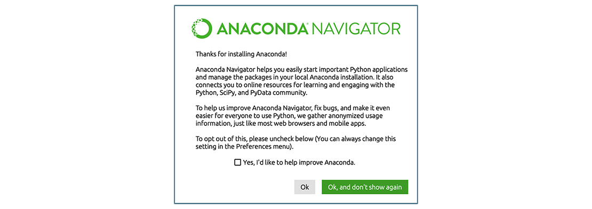
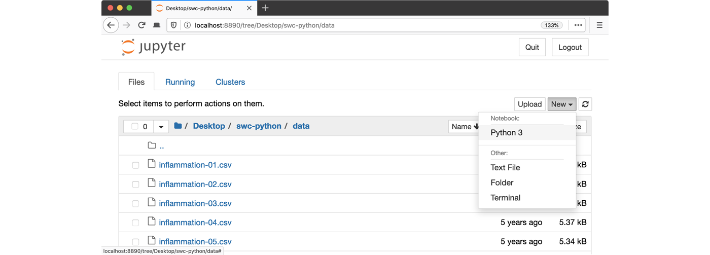
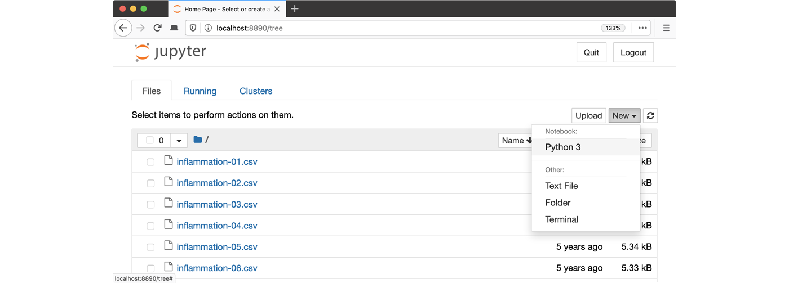

Summary and Setup
The best way to learn how to program is to do something useful, so this introduction to Python is built around a common scientific task: data analysis.
Scenario: A Miracle Arthritis Inflammation Cure
Our imaginary colleague “Dr. Maverick” has invented a new miracle drug that promises to cure arthritis inflammation flare-ups after only 3 weeks since initially taking the medication! Naturally, we wish to see the clinical trial data, and after months of asking for the data they have finally provided us with a CSV spreadsheet containing the clinical trial data.
The CSV file contains the number of inflammation flare-ups per day for the 60 patients in the initial clinical trial, with the trial lasting 40 days. Each row corresponds to a patient, and each column corresponds to a day in the trial. Once a patient has their first inflammation flare-up they take the medication and wait a few weeks for it to take effect and reduce flare-ups.
To see how effective the treatment is we would like to:
- Calculate the average inflammation per day across all patients.
- Plot the result to discuss and share with colleagues.

Data Format
The data sets are stored in comma-separated values (CSV) format:
- each row holds information for a single patient,
- columns represent successive days.
The first three rows of our first file look like this:
0,0,1,3,1,2,4,7,8,3,3,3,10,5,7,4,7,7,12,18,6,13,11,11,7,7,4,6,8,8,4,4,5,7,3,4,2,3,0,0
0,1,2,1,2,1,3,2,2,6,10,11,5,9,4,4,7,16,8,6,18,4,12,5,12,7,11,5,11,3,3,5,4,4,5,5,1,1,0,1
0,1,1,3,3,2,6,2,5,9,5,7,4,5,4,15,5,11,9,10,19,14,12,17,7,12,11,7,4,2,10,5,4,2,2,3,2,2,1,1Each number represents the number of inflammation bouts that a particular patient experienced on a given day.
For example, value “6” at row 3 column 7 of the data set above means that the third patient was experiencing inflammation six times on the seventh day of the clinical study.
In order to analyze this data and report to our colleagues, we’ll have to learn a little bit about programming.
Prerequisites
You need to understand the concepts of files and directories and how to start a Python interpreter before tackling this lesson. This lesson sometimes references Jupyter Notebook although you can use any Python interpreter mentioned in the Setup.
The commands in this lesson pertain to any officially supported Python version, currently Python 3.8+. Newer versions usually have better error printouts, so using newer Python versions is recommend if possible.
This lesson is designed to be run on a personal computer. All of the software and data used in this lesson are freely available online, and instructions on how to obtain them are provided below.
Setup
To participate in this lesson, you will need a working Unix-like shell environment. We will be using Bash (Bourne Again Shell) which is standard on Linux and macOS. Some macOS users (Catalina or later) will have zsh (Z shell) as their default version. Even if you are a Windows user, learning Bash will open up a powerful set of tools on your personal machine, and familiarize you with the standard remote interface used on most servers and supercomputers.
For the workshop, we will use the Broad’s login servers. To access those machines, your laptop needs to be on the Broad-Internal wireless network when you are on-site OR on the Broad VPN if you have a non-Broad-issued computer or are off-site.
Prerequisite
To reach to the Broad login servers when you are off-site, you will connect to the Broad VPN to access internal Broad resources.
VPN Installation
- Use Broad Self Service (Mac
or Windows)
to install the Cisco AnyConnect Secure Mobility Client
software
OR
- Visit https://vpn.broadinstitute.org and follow the prompts.
You will also need to set up DUO two-factor authentication or Google 2FA to use the Broad VPN. Contact BITS for troubleshooting if you have a Broad-issued machine.
If you can’t access the documentation linked above or can’t connect to the Broad VPN using your Broad credentials, please let the workshop organizers know so we can assess whether you will be able to participate in the workshop.
Testing Broad Login Server access
If you are on-site, connect to the Broad-Internal wireless network. If you are off-site, connect to the Broad VPN.
Obtain lesson materials
- Download python-novice-inflammation-data.zip and python-novice-inflammation-code.zip.
- Create a folder called
swc-pythonin your home directory. - Move downloaded files to
swc-python. - Unzip the files.
You should see two folders called data and
code in the swc-python directory.
Show your successful access
- Type touch /broad/hptmp/computing_basics_python/<username>_was_here
- Type ls /broad/hptmp/computing_basics_python Did you leave your mark?
- Type exit to leave the server.
If you were unable to access the Broad login servers, please let the workshop organizers know so we can help you troubleshoot before the start of the workshop.
Launch Python interface
To start working with Python, we need to launch a program that will interpret and execute our Python commands. Below we list several options. If you don’t have a preference, proceed with the top option in the list that is available on your machine. Otherwise, you may use any interface you like.
Option A: Jupyter Notebook
A Jupyter Notebook provides a browser-based interface for working with Python. If you installed Anaconda, you can launch a notebook in two ways:
- Launch Anaconda Navigator. It might ask you if you’d like to send anonymized usage information to Anaconda developers:  Make your choice and click “Ok, and don’t show again” button.
- Find the “Notebook” tab and click on the “Launch” button:
 Anaconda will open a new
browser window or tab with a Notebook Dashboard showing you the contents
of your Home (or User) folder.
Anaconda will open a new
browser window or tab with a Notebook Dashboard showing you the contents
of your Home (or User) folder. - Navigate to the
datadirectory by clicking on the directory names leading to it:Desktop,swc-python, thendata:
- Launch the notebook by clicking on the “New” button and then selecting “Python 3”: 
1. Navigate to the data directory:
If you’re using a Unix shell application, such as Terminal app in macOS, Console or Terminal in Linux, or Git Bash on Windows, execute the following command:
On Windows, you can use its native Command Prompt program. The
easiest way to start it up is pressing Windows Logo
Key+R, entering cmd, and hitting
Return. In the Command Prompt, use the following command to
navigate to the data folder:
cd /D %userprofile%\Desktop\swc-python\data2. Start Jupyter server
python -m notebook3. Launch the notebook by clicking on the “New” button on the right and selecting “Python 3” from the drop-down menu: 
Option B: IPython interpreter
IPython is an alternative solution situated somewhere in between the plain-vanilla Python interpreter and Jupyter Notebook. It provides an interactive command-line based interpreter with various convenience features and commands. You should have IPython on your system if you installed Anaconda.
To start using IPython, execute:
ipython
Option C: plain-vanilla Python interpreter
To launch a plain-vanilla Python interpreter, execute:
pythonIf you are using Git Bash on
Windows, you have to call Python via
winpty:
winpty python